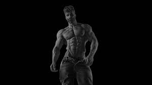

Who is(or was) Adonis?
You may be asking yourself that question. Adonis, in Greek mythology, a youth of remarkable beauty, the favourite of the goddess Aphrodite (identified with Venus by the Romans). Traditionally, he was the product of the incestuous love Smyrna (Myrrha) entertained for her own father, the Syrian king Theias.
So, in short, a greek mythology figure who has achieved everything in life. You(and probably every other man) want to become like him. The "modern" Adonis is a man who is a man. Read that as many times as you have to. A man who is a man has status, power and is generally a gigachad. To be happy, that's what we need to achieve.
If you think that's offensive, leave. This is no place where you should be.
But, if you aren't a jeffrey, then you might want to stay.

How you can help me
This website is free. The only thing you need to do is ignore the ads that are in this website and just keep scrolling, don't leave the website. You can also recommend it to other people. Thanks a lot, and if you help me, I'll do my best to help you
become Adonis(Gigachad)
The basics
Why be like Adonis?
Because:
It gets you women
It gets you a social life
It gets you a life
You will die a gigachad
Your body count will skyrocket
You will(at some point) literally have to discipline yourself to not have sex with too many women
So, you can become a man. Don't ever quit. I'm gonna show you the way but you'll have to walk it yourself. Good Luck
Dopamine Detox
Dopamine Detoxing is when you change your lifestyle to focus on delayed gratification activities instead of instant gratification activities. Instant gratification activities are things like porn, junk food, social media, etc. ... . So things that give you dopamine instantly after doing them, but they have consequences. Delayed gratification
activities are things like working out, reading, meditating, etc. ... . So basically things that(mostly) fell unconfortable or hard to do, but the rewards are big. So you feel the pain now and later the(sometimes even permanent) comfort. You get an aesthetic body, a smart brain, and a peacefull mind. That's all you need to focus on and your life will be great.
However, no human being can do such a thing permanetly. What you can do is what I call the 80/20 system, where 80% of the time you spend with delayed gratification activities, and the other 20% with instant gratification. That can be 80/20 of a day, week, month or even year. But you need to cut out these i.g.(instant gratification) habits and replace
them with better ones, such as hanging out with friends, dating girls, or maybe sometimes go and watch a movie. If you don't have friends or can't pull girls, don't worry, we're trying to achieve the opposite here.
Here are some i.g. activities that you should avoid:
Porn/Mastrubation
Gaming
Social networks(You can only use them for educational things!)
Generally wasting your time
Junk Food
And here are some d.g. activities you should do:
Reading
Meditating
Working out
Things that will help you make money(e.g. coding, marketing, etc. ...)
NoFap
NoFap is part of dopamine detox, just it gets a little deeper. If you never heard of NoFap, it's rejecting porn and mastrubation completly. It makes you more confident(around women), your testosterone won't be lowering, and I could go on. However, it is very hard to quit, and most guys do it wrong. You shouldn't count your nofap streak, but progressive underload it,
so basically jerking off less over time. For example, you don't count the days you didn't fap, and fap less every week, starting at once a week max.. Over time, when you just don't fap anymore, you'll see the results yourself.
What not to do(don't be a Jeffrey)
A Jeffrey is the opposite of Adonis, so someone who isn't on self improvment but on self deproving. You don't want to be there and eventually kill yourself. If you really don't want to be there, do the things mentioned in this website and don't do the opposite.
The guide to Adonis
The modern day media and how they keep you a Jeffrey
The modern society(a.k.a. The matrix, the world goverment) wants you weak and poor so that they can benefit from it and control the people. That includes major social networks companies such as tiktok or instagram, the educational system and people who can control you. The educational system makes you weak, feminine and submissive and wants to keep you poor. Becoming independent and free will make you profit but they will lose. So they are doing everything to keep you in your place. If you don't know what I'm talking about, it's the matrix.
They will tell you false information like "Oh, oh, well if you want to get girls you have to be nice to them ask them about their hobbies", bullshit. Don't listen to that modern day advice, because most of them come from a suspicious source. I myself got all this information from sources such as Hamza Ahmed, Andrew Tate, David Goggins and books. I wasn't a highschool nerd yet I read
books, good books(I'll list them a little lower below). And never take advice from someone that isn't muscular or bigger than you or is on steroids.
Extra: Books to read
Here are books you need to read:
The millionare Fastlane(wealth)
The way of superior man(masculinity)
How to win friends and influence people
Psycology of selling
Who mooed my cheese?(Helps you make better decisions)
Dot com secrets(Online bussiness)
Atomic habits
Optional: Holy books like bible or quaran for spiritual self
Make sure to actually implement the wisdom you get from these books because else you'll forget it. As soon as you learn something, go and use it immediatly and write it down.
Build your body
If you want girls to compliment you about your body instead of men, you need to know what kind of body shape you need to have. The best physique for dating is an aesthetic physique(a.k.a. V Taper, a phisique where your shoulders are wider than your waist). Round shoulders, wide back, thick neck, shredded abs, round, big chest and big arms. In order for you to achive that, you need a proper workout plan and a proper diet. I will give you 2 hyperlinks for diet and workout.
This will probably be the longest section of this website, so I'll try to make it as quick as possible. If you don't know what testosterone is, it's a male hormone that makes men men. You will undoubtedly become more agressive with a lot of testosterone, but that's our primal brains. We men are meant to be agressive. We are just being held back by law. Nowadays, the "healthy" amount of testosterone is
around 250ng/dl - 950ng/dl. But guess what, our ancestors from 100 years ago had 4-digit testosterone levels, on avarage. And now, answer me this question, are men now happier than men 100 years ago, excluding wars, hunger and plagues? Probably. That's because of testosterone. But you probably have low testosterone so you want to increase it. You also need to dedicate you lifestyle to get more testosterone,
everything else will come with it. So, here are the most proven ways to increase your testosterone naturally. The last method will increase it by 400%, so I recommend getting to 500ng/dl and then doing this method. Then you will have 2000ng/dl testosterone.
Sunlight: sunlight won't increase you testosterone much, but lack of sunlight kills it. You literally need to go outside in sunlight and tan your penis. This will not only help your testosterone but also will make you more romantic. And don't put on sunscreen, because think about it, did cavemen have sunscreen? No. They were out, naked, the whole day, exposed to sunlight. Now, sunlight isn't necessarly the sun being there and you can see it, it means that the sky
is a little bright and that you can see outside without street lamps.
Cortisol: Cortisol is a stress hormone. If you decrease cortisol, you testosterone increases. Now cortisol isn't hard to decrease. The only things you need to do is breathing through your nose and breathing exercises. If you nose is blocked, understand that your nose works like a muscle. The more you use it, the stronger it gets and the other way around. These 2 methods will decrease cortisol and automatically increase testosterone. Hormones like estrogen and progesteron
are also hormones that if decreased, it increases your testosterone.
Habits: Good
The best habits to do to increase testosterone are sunshine, good diet, gym, sleep, and growth. Tesosterone can be achieved by just being confident around girls. Testosterone comes from success. If you achieve status and girls, you testosterone will increase. Just don't do the bad habits.
Bad Habits
The bad habits that destroys your testosterone are junk food(cheating on diet), not working out, social media, porn, and slacking off. If you don't do the good habits your testosterone stays the same, and if you do the bad ones your testosterone decreases. If you both, your testosterone stays the same. Common sense, right?
Semen retention(extreme)
Semen retention is not nofap. NoFap is when you don't mastrubate, but you still have sex, semen retention is when you don't cum. BUT, if you do it in an extreme way, your testosterone will increase by 400%. And it is semen retention, while having sex. So basically, stopping before cumming. You will literally become 4x stronger.
Mental health.
Why is it important? Because it is a big part of self improvment. If you have good mental health, then you won't do the bad habits. You won't slack off. You will go and become successfull in life. Now I can't really help with anxiety, stress or depression, but I can tell you what to do to improve it. First of all, meditate. The best way to do that is with the app medito. You can download it on your phone and meditate with it daily. The 2nd thing you need to do is journaling, deep and gratitude journaling. Gratitude
journaling is when you write down what you're greatfull for. Deep journaling is when you write about how you feel, how your day was, basically like having a diary, just a little deeper. The next thing you need to do is going out in nature and observing it. Pick up a leaf from a tree like when you were young, jump into a puddle, make a snowman, enjoy nature! This will not only improve your mental health but also make you happier. Next, you need to be kind to others. I don't think I need to add anything to that. It isn't hard to improve your mental health, you just need to have a good one.
End
I pretty much told you what you need. Things like dating advice are on my other websites. Actually, I'm writing this website to get money from ads and to improve myself, while leading you to a better life. I hope this website helped you and that you will be like Adonis one day. Good luck and good bye